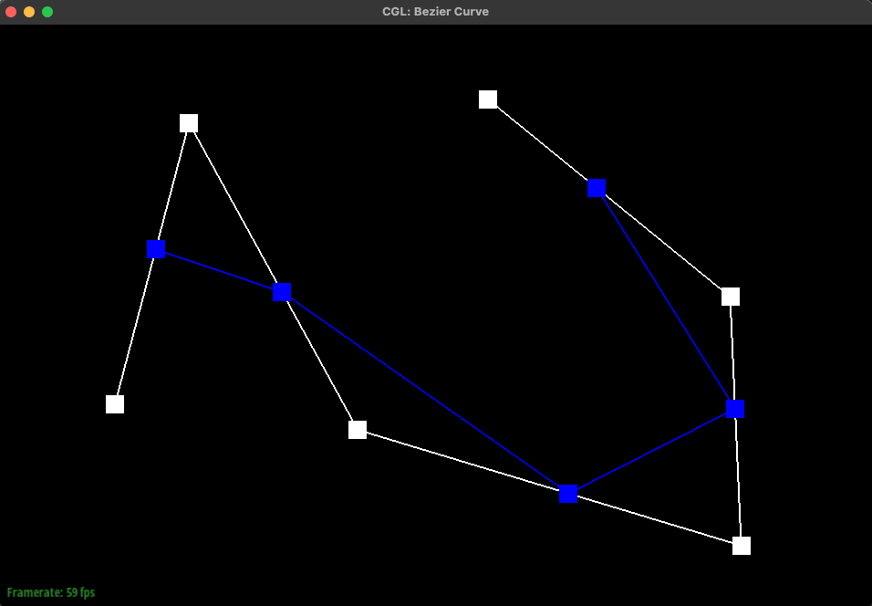

Overview
In this assignment, we implemented various ways for rendering shapes: first in 2D with Bezier curves and then in 3D with triangle meshes. Both used a lot of math. There is a lot of math in computer graphics…
While the first two parts of this assignment had us implement Bezier curves using de Casteljau's algorithm, the bulk of this project was spent learning how to traverse meshes and how to edit them in interesting ways via algorithms and formulae. With the power of math, science, and this expensive laptop I had lying around, we felt the power of halfedges first-hand in learning how deceptively easy they are to traverse as we worked to flip and split edges to eventually implement the 4-1 subdivision algorithm we saw in lecture, one that is used in countless programs to upscale and handle models in the world outside of our classroom.
The biggest takeaway from this project was probably halfedges. They're a simple data structure, yet they can connect so much: after completing this project, not only does it make sense that meshes would use them as a basis for traversal, but it's hard to think of any other way. Though their somewhat reader-unfriendly nature can be annoying when it comes time to debug (there were more than a couple of bugs caused by not calling next() enough times), their power can't be understated.
Section I: Bezier Curves and Surfaces
Part 1: Bezier curves with 1D de Casteljau subdivision
Briefly explain de Casteljau's algorithm and how you implemented it in order to evaluate Bezier curves.
The de Casteljau Algorithm is a technique for recursively evaluating the precise location of a point on a Bezier Curve parameterized by the value t. The recursive step is defined by the
linear interpolation lerp(pi, pi+1, t). In our code, we implemented this recursive step to return a list of linearly interpolated points, using the lerp equation:
(1 - t) * pi + t * pi+1.
Show screenshots of each step / level of the evaluation from the original control points down to the final evaluated point.
|
|

|
|
|
|
|
|
|
|
Show a screenshot of a slightly different Bezier curve by moving the original control points around and modifying the parameter tt via mouse scrolling
|
|
|
Part 2: Bezier surfaces with separable 1D de Casteljau subdivision
Briefly explain how de Casteljau algorithm extends to Bezier surfaces and how you implemented it in order to evaluate Bezier surfaces.
In the case of Bezier surfaces, instead of working with only one curve, we use multiple. The control points stored in our n x n control point grid define n Bezier curves that will define our surface.
First, we evaluate these n control points paramaterized by u using evaluate1D. In doing so, we get a list of n points that are (kind of) lined up in 3D space. Once we've found our n points, we pass them into evaluate1D once more, paramaterized by v. Our output will give us a point that lies on the Bezier surface at parameter u, v. By defining points in this manner, we can create surfaces.
Show a screenshot of bez/teapot.bez (not .dae) evaluated by your implementation.

Section II: Sampling
Part 3: Average normals for half-edge meshes
Briefly explain how you implemented the area-weighted vertex normals.
For a given vertex, we iterated through all vertices on its face to find its area-weighted normal. Each three vertices were split into two vectors, and we took the cross product of those two vectors to get their perpendicular -- in other words, the normal of the center vertex! Because the magnitude of that perpendicular is equal to the area between those two vectors, this is already an area-weighted normal! The normalized sum of all of these vertex normals is the area-weighted normal of the face.
Show screenshots of the teapot, comparing teapot shading with and without vertex normals.
Part 4: Edge Flip
Briefly explain how you implemented the edge flip operation and describe any interesting implementation / debugging tricks you have used.
To implement edge flipping, I followed this diagram that Dhruv Swarup posted to part 4's Piazza thread, originally from Carnegie Mellon's "Scotty3D" repo:

In following this diagram, I created a staggering list of "iter" variables that each pointed to an item on the "before flip" diagram. So I had 10 halfedges, 4 vertices, 4 edges, and 2 faces at my disposal. After compiling all these references, I then set about reassigning them so they would reflect the state of the "after flip" diagram. I did this methodically, starting from assigning the vertices' halfedges, then the edges' halfedges, then the faces, and then finally using the setNeighbors function to assign the appropriate references to the halfedges themselves.
Show screenshots of the teapot before and after some edge flips.
Write about your eventful debugging journey, if you have experienced one.
Debugging was mostly me reading through my code a second and third time and catching stuff I'd missed on my initial run when my eyes had glazed over part-way through my assignments. I'd initially forgotten to assign the fourth edge, e4, its appropriate halfedge, which went about as well as you'd think it would. I also erroneously assigned my vertex references (I needed halfedge 0's next next vertex, not its next vertex) which also went about as well as you'd think it would. After finding these little blips, I reran my logic and it worked great.
Part 5: Half-edge split
Part 5: Edge Split
Briefly explain how you implemented the edge split operation and describe any interesting implementation / debugging tricks you have used.
To implement edge splitting, I first drew a diagram.
I then followed my diagram with precision, first gathering references to all of the original edges, halfedges, vertices, and faces, and then creating all the new edges, halfedges, vertices, and faces that the split would create. After prepping all of my points, I then set about assembling them in a way that reflected the picture I drew, painstakingly going through each and every facet of my diagram and setting the halfedges and various references one by one, in a manner similar to Part 4.
With a good amount of luck and some skill, I was able to get Part 5 to work first try.
Show screenshots of a mesh before and after some edge splits.
Show screenshots of a mesh before and after a combination of both edge splits and edge flips.
Write about your eventful debugging journey, if you have experienced one.
I consider myself incredibly lucky and likely blessed in that I did not have to embark on any debugging journey for this part. My methodical way of setting all of the references one by one, and making sure I didn't miss any or mis-assigned anything paid off. (My code is commented as well: that's how careful I was being, to comment as I was going… check it out on our repo.)
Part 6: Loop subdivision for mesh upsampling
Briefly explain how you implemented the loop subdivision and describe any interesting implementation / debugging tricks you have used.
To implement loop subdivision, we closely followed the process outlined in the function's docstring and in the Project Spec. The steps are summarized as follows:
1. Compute a new position for every vertex in the mesh using Loop Subdivision.
2. Compute updated positions for vertexes associated with edges.
3. Split every edge in the mesh that doesn't connect two new vertices (to avoid infinite loops).
4. Flip edges that connect an old and a new vertex.
5. Finally, update all current vertex positions with the newly computed positions.
This process will compute 4-1 subdivisions over the entire mesh. As is often the case, this strategy did not work on the first implementation. Initially, there was some warping over the entire
mesh and edges were not being split or flipped evenly. Since our algorithm relies so much on Parts 4 and 5, this prompted an audit into their own implementations where we found out that the functions
were not configured properly to have consistent and accurate behaviour over the entier mesh. Another annoying issue was that some original vertices seemed "stubborn", as in they refused to change position
no matter how much upsampling we threw at them. It turned out that a lot of our values were stored as ints, causing some rounding errors, and making sure our values were consistently floats across the board
smoothed out the last of our warping problems.
Take some notes, as well as some screenshots, of your observations on how meshes behave after loop subdivision. What happens to sharp corners and edges? Can you reduce this effect by pre-splitting some edges?
|
|
|
|
|
|
As you can see on the cube, sharp corners and edges are rounded, significantly changing the shape of the original mesh. This is because our new vertex positions are a weighted average of neighbor positions, causing everything to get pulled in to the center of the cube. Because this is inherent to our algorithm, sharp edges can't be preserved through any pre-processing of the mesh -- the algorithm itself would need to be modified.
Notice that the cube becomes slightly asymmetric after repeated subdivisions. Can you pre-process the cube with edge flips and splits so that the cube subdivides symmetrically? Document these effects and explain why they occur.
You can! If you split all edges that bisect a face, you get a symmetric result after multiple passes of upsampling:
This is because of the level of detail of our original mesh. Our algorithm does a lot of averaging, so it needs a higher level of detail to be able to provide the most accurate results. Splitting those edges gives the program enough data points to work with to better approximate the mesh after upsampling. Notice how the teapot, a very high level-of-detail model, does not have this issue on upsampling, and maintains its shape very well.